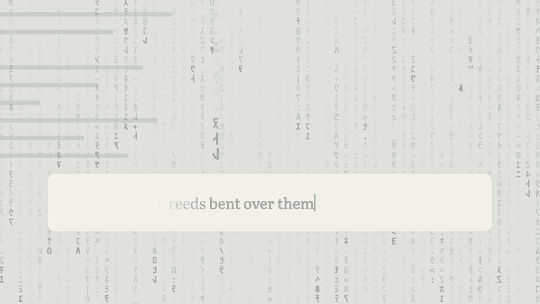
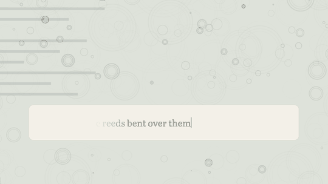

A quiet place to write without stopping.
Summon it over any app with ⌃⌥Space, write forward for as long as you like while the text glides past the caret, and ⌘⏎ puts all of it into that app.
DownloadmacOS 14 or later. Self-signed, not notarized: right-click › Open the first time. Source on GitHub.
Click into the box to write your own; ⏎ sends it.
- ⌃⌥Space summons the box over the app you are in.
- ⌘⏎ pastes into the app behind; it needs the Accessibility permission, for the paste only.
- ⌘⇧⏎ copies, ⌘S saves, Esc hides.
- A ⌘V that lands nowhere is one more ⌘V away: the text stays on the clipboard, and ⌘Z on the empty line brings it back into Lemna.
- Every key is kept in an encrypted journal on your Mac until the text has gone out.
- Two looks: Still, the default, paper by day and a warm dark by night as the system is; Lemna, dark and monospaced.
- A click per key from five sound packs, or off; five beds under it (rain, ship, lab, space, synth) and an ambience on the dim, each or off. It starts with the lab bed and Code.
- Turned on in Settings, other apps play a little quieter and softer while the box is up, and as before once it hides. macOS asks once to let Lemna tap system audio; nothing is recorded or kept.
- Nothing leaves your Mac: no network, no account, no telemetry.
Ambience
Move the review to Thursday at ten and send the draft


On the dim while you write: Code (the default), Still water, or off.